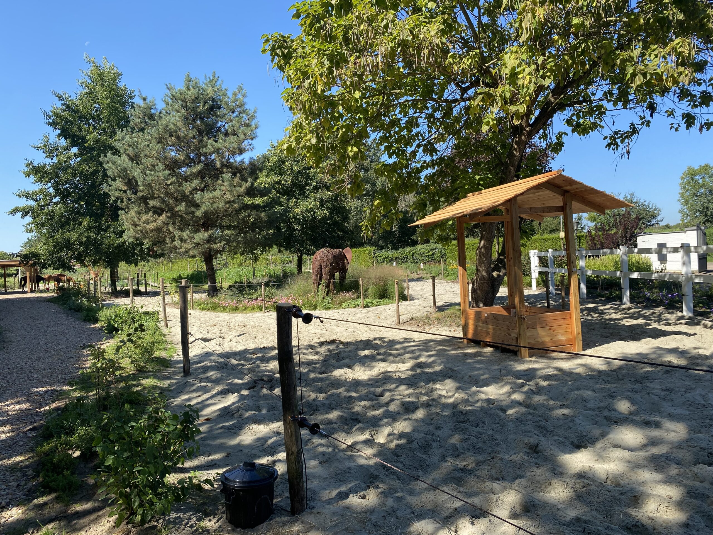
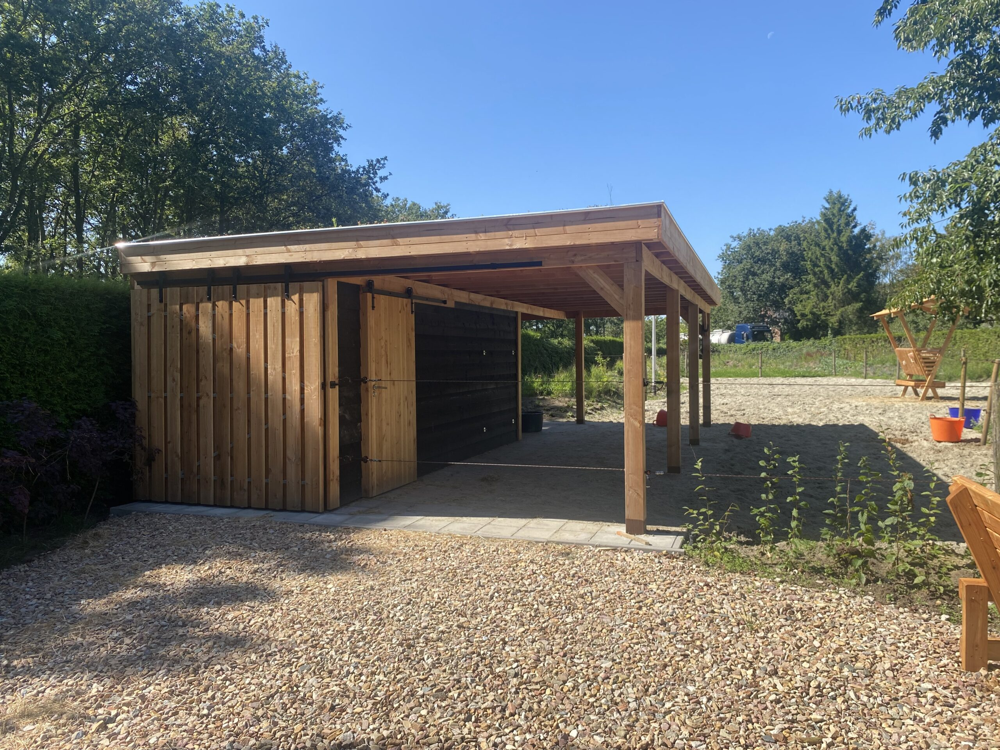

Uniek specialisme
Een simulatie van het natuurgebied het Great Basin in Noord-Amerika. Een totaalconcept waarbij de biologie en leefwijze van het paard als diersoort voorop staan.


Neem gerust contact met ons op. Dan leggen wij graag alles uit onder het genot van een bakje koffie of thee.
Contact opnemen